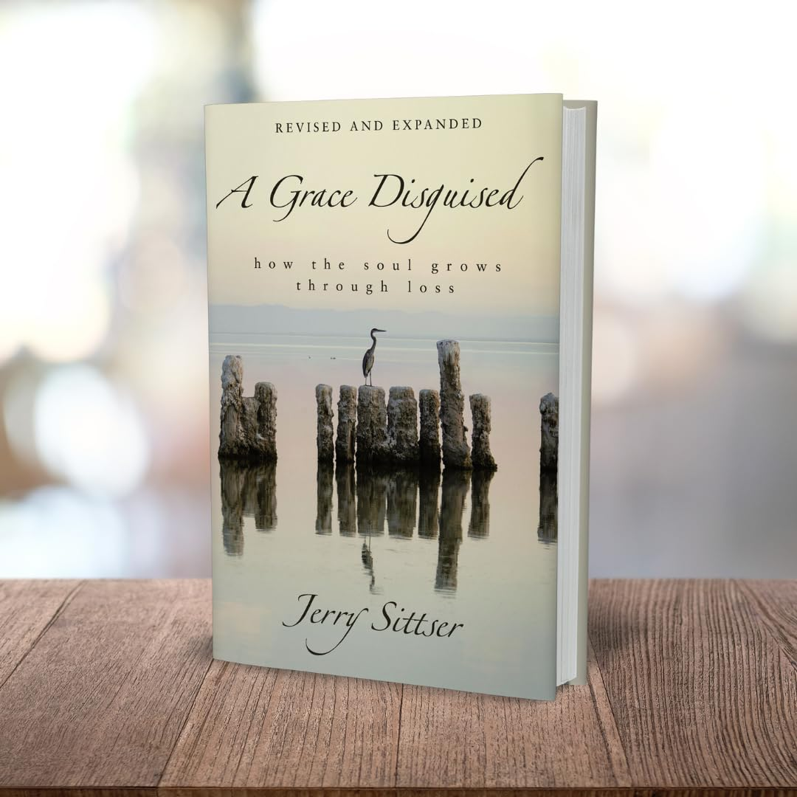
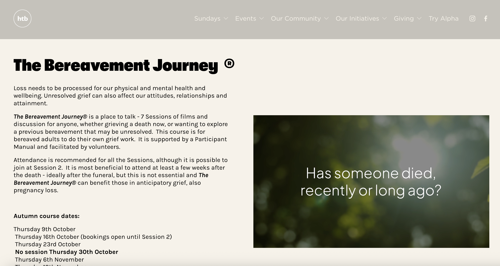
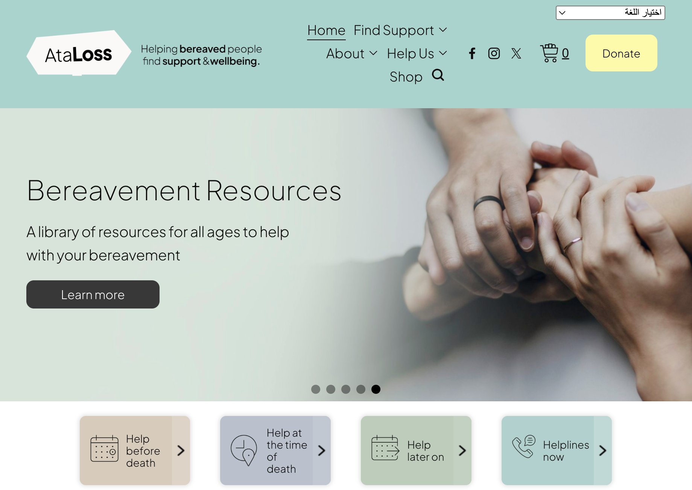
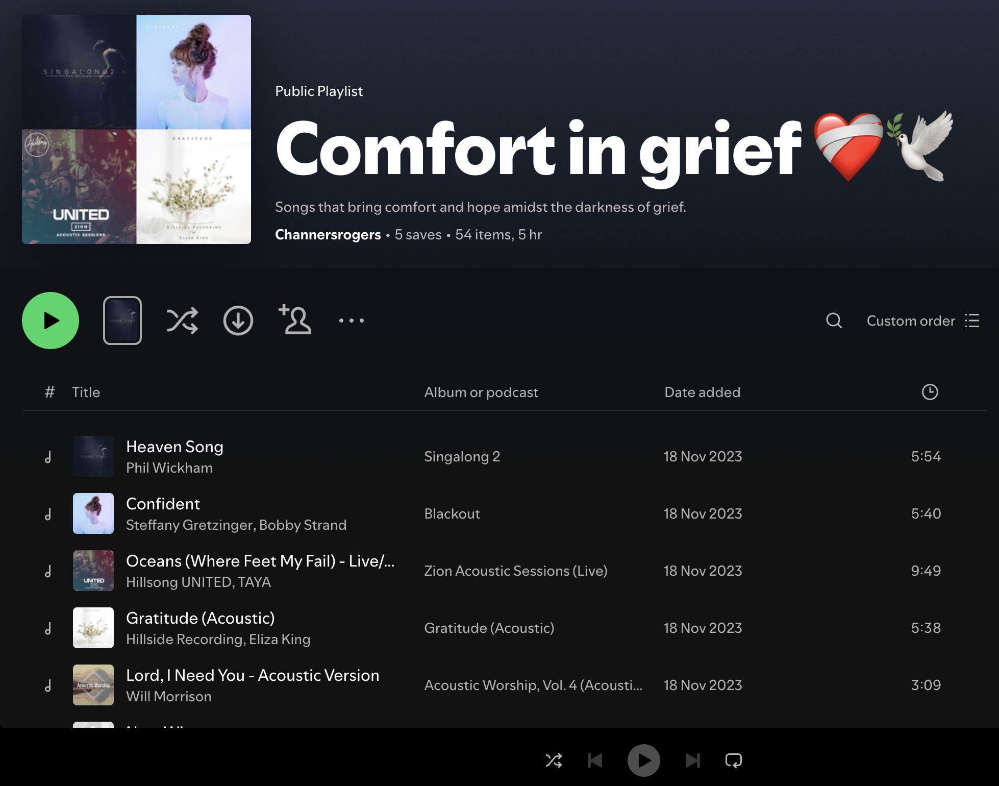

Things that help...
 Chantal
Chantal
If you are grieving I want you to know that you are not alone. Grief can be the loneliest feeling even if you are surrounded by people. I know for myself with each month after Mum’s passing I would be beating myself up for still feeling so awful. After 18 months I got to go to a Grief Support group at church and it was there that I learnt the term to ‘be gentle with myself’ and to treat myself as I would a friend rather than getting angry with myself for still feeling so horrible. I wanted friends to know what to do without me telling them (I know - they’re not mind readers, I couldn’t articulate what I needed, I was too sad) but most people don’t know what to do when someone is grieving and don’t feel comfortable with grief.
I stumbled across this video a couple of years on and WISHED I had had it in my early stages of grief. So if you are grieving hard right now and think it would be helpful send your people over to refugeingrief.com to get them to understand in a gentle way what you need more than platitudes and ‘cheering up’/distracting. Their video is beautiful and simple and short and I loved it, thank you Refuge in Grief for making this.
There are lots of other wonderful and easy access resources on the website Refuge in Grief so hop on over there and take a look.
A friend of my husband's who I have come to know too has set up a blog called Making Lemonade after losing his beloved wife Lauren, who was mother to his beautiful little girl Molly, to breast cancer in August 2020. Sam is incredible at leaning into his pain and processing his grief, he hopes that he can help others through sharing his experiences and journey through social media and his blog. He is also a member of WAY - Widowed And Young "WAY is a UK charity that offers a peer-to-peer support network for anyone who's lost a partner before their 51st birthday – married or not, with or without children, whatever their sexual orientation." To find out more please click the above links.
Around 3 months after Mum’s passing I read a book called ‘Dead Mom’s Club’. It sounds awful but it was written by a comedian and anyone who knows me knows I love comedies so this was a real help to me as a lot of the author’s experiences were similar to mine. Kate says it’s the “Crappiest club in the world” but again this was something that made me feel not alone and others had been through this before me. Available at Amazon.
Talk to people who are able to handle your pain Whether this is a therapist/counsellor or a close friend/family member who is ok with you sobbing uncontrollably and is on hand with tissues. I found it such a relief to be with close people who I didn't have to try and not make them feel uncomfortable with my grieving, and when those people would even cry with me I felt so very seen at the way they held presence with me and entered into deep empathy. Top tip - always carry tissues with you, I learnt on a walk once when a wave of grief hit me out of nowhere and the tears and snot would not stop, not to ever get caught short again! Being able to talk about your favourite memories of your person and have people ask about them or share things they loved about your person rather than avoid talking about them as they don't know how to handle you upset is such a gift.Growing through Grief
When we think of grief, most of us think of losing someone we love, and yet grief encompasses all kinds of loss. Whether you’ve lost a loved one, a job, are experiencing a difficult move or transition, or find yourself feeling stuck after a loss many years ago, you’ve experienced grief and know it’s not one size fits all. In Growing Through Grief, we’ll sit with each other in our unique grief and remain open to the possibility of community support through our similarities.
Over the span of 8 weeks together, this group will serve as a space for comfort, presence in pain, support, and healing. House of Hope leaders will help members find tools for coping and walking through the deep emotional pain of grief. This course is the one I was blessed to take part in and help with for a couple of years while living in Chicago during the Pandemic and afterwards and I cannot recommend it enough if you are in the Chicagoland area.
For more info click Growing Through Grief.
Update 2025
Chantal
I cannot believe I am now writing this as I come up to the 7th anniversary of my lovely Mum's passing in a week. Her Mum - my Grandma, passed in August last year and so with these two anniversaries coming up it seems very fitting that I update this page with a few resources that I've found since, in the hope that they will be able to help someone else. I know they both would like that someone else would be helped through their loss. So below are a couple of things that have helped me since I last wrote here and I pray that they would be helpful in some way for you too if you've found your way here ♥️
A Grace Disguised - How the soul grows through Loss
This incredible book was given to every member in our Grief group by one of our kind friends. Reading of this man’s heart-breaking journey with combined and compounded grief while having to take care of his two remaining children moved me deeply. I now always try to have a copy on hand to give away to anyone going through loss.

"Jerry Sittser walks through his own grief and loss to show that new life is possible--one marked by spiritual depth, joy, compassion, and a deeper appreciation of simple and ordinary gifts." Loss came suddenly for him when in an instant, a tragic car accident claimed three generations of his family: his mother, his wife, and his young daughter. While most of us will not experience such a catastrophic loss in our lifetime, all of us will face some kind of loss in life. But we can, if we choose, know the grace that transforms us. Sittser will help you put your thoughts into words in a way that will guide you deeper into your own healing process.
A Grace Disguised plumbs the depths of our sorrows, asks questions many people are afraid to ask, and provides hope in its answers:
- • Will the pain ever subside?
- • Will the depression ever lift?
- • Will I ever overcome the bitterness I feel?
- • What is God's plan in all of this?
"The circumstances are not important; what we do with those circumstances is. In coming to the end of ourselves, we can come to the beginning of a new life." Available at Amazon.
The Bereavement Journey and Ataloss.org
On searching for a Grief Support group for people to have access to in the UK just last week, I came across this course run by HTB https://htb.org/bereavement . In January 2025 the programme was being offered in over 400 locations across the UK - a growth rate of 4 locations a week - including workplaces and hospitals.

Topics covered in the 7 sessions are:
- • Attachment, separation and loss
- • The pain and responses of grief
- • Anger and guilt
- • Coping with others’ reactions
- • Delayed and suppressed grief
- • Adjusting to change
- • Moving forward healthily
Faith is reserved for the final, 7th session on Faith Questions in Bereavement, which is optional, making the course suitable for anyone of any faith or none.
Finding The Bereavement Journey then led me to a website that I was blown away by the amount of resources that they had for anyone who is about to face loss, has just gone through loss or has lost someone a while ago. https://www.ataloss.org/ The resources are so practical from all the things that encompass dying, death and grieving. From Counselling, Funeral advice, Help with admin, Helplines, Mental Health services and peer support. It’s a one stop shop for all things you need help with at what is such an overwhelming time. So grateful that services like this exist!

Spotify Playlist
Sharing here my Spotify Playlist for anyone who would like… https://open.spotify.com/playlist/50YqR3hAlXlEO00obWbAZw?si=3597662ca8874773

Thank you for stopping by.
♥️